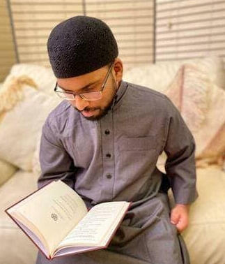

01
Learn together.
Join one live session each week, with calm, patient teaching that meets you where you are.
ONE WEEKLY LIVE SESSIONFOR A LIFE WITH MORE BARAKAH
Make room for the Quran, even in a busy life. Calm, supportive weekly classes that help you recite with confidence — one small step at a time.
A moment for your Quran.
A little more peace in your day.
YOU’RE IN THE RIGHT PLACE
Work, family, and everyday responsibilities can push Quran learning aside. We make it easier to begin again — without guilt, overwhelm, or the need to be perfect.
Find your place with usDOES THIS SOUND FAMILIAR?
“I can read the Quran, but I’m not sure I’m reading it correctly.”
“I want to be consistent, but life keeps getting in the way.”
“I feel nervous reading aloud. I need a patient, understanding teacher.”
“I’d love to improve, in a space where I won’t be judged.”
QuranSkool was created for people just like you.
A RHYTHM THAT FITS YOUR LIFE
You don’t need hours every day.
Just a little intention, a simple plan,
and the right support.
Join one live session each week, with calm, patient teaching that meets you where you are.
ONE WEEKLY LIVE SESSIONFollow a simple weekly practice plan. Build consistency in small, manageable moments.
A SIMPLE PRACTICE PLANKeep moving forward with optional voice-note feedback and a private, supportive community.
SUPPORT ALONG THE WAYSession replays are available whenever you need them.
Optional voice notes help you practise with more confidence.

GOOD GUIDANCE MAKES THE DIFFERENCE
USTADH FARAZ ABID · UK-BASED QURAN TEACHER
A qualified, experienced teacher who believes that learning the Quran should feel encouraging, never intimidating.
Trained at Jamia Al Karam, Egypt, and Cambridge Muslim College, Faraz brings a calm, caring, and practical approach to every lesson.
Patient teaching. Practical steps. A lifelong connection.
BE PART OF THE BEGINNING
Join as a founding member and help shape QuranSkool from the very beginning. A welcoming place to learn, practise, and grow — together.
You don’t need perfection.
You don’t need hours.
You just need a place to begin.
A little commitment. Space for lasting growth.
YOUR MEMBERSHIP INCLUDES
You’ll join through our Skool community.
£20 is the first-month offer. Confirm ongoing pricing at signup.
A LITTLE CLARITY
A few things you might be wondering about your QuranSkool journey.
QuranSkool is designed for adults and parents who can read the Quran and want to improve their confidence, correctness, and consistency. It’s especially suited to people balancing learning with work, family, and other responsibilities.
There’s one live session each week, alongside a simple weekly practice plan. The approach is built around small, manageable steps so you can keep learning alongside a busy life.
Session replays are available anytime, so you can catch up when it works for you and revisit lessons as part of your practice.
Absolutely. QuranSkool is a calm, supportive space built around patient, step-by-step teaching. The focus is on progress over perfection, without pressure or judgement.
Founding members can join for £20 for their first month and help shape QuranSkool from the beginning. This is an introductory offer; check the current offer, ongoing membership price, and terms on Skool before signing up.
Choose any “Join” or “Begin your journey” button on this page to visit our Skool community. You can review the membership details and complete your signup there.
LEARN. RECITE. GROW.
Come as you are. Take the first step with us.
Begin your Quran journey FOUNDING MEMBERSHIP · £20 FOR YOUR FIRST MONTH